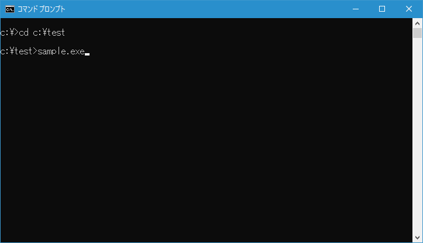

内部コマンドと外部コマンドの実行
コマンドプロンプトを起動したあと、何らかのアクションを行います。例えばファイルのコピーをしたり、プログラムを実行したりします。このコマンドプロンプトで実行されるアクションは、大きく分けて内部コマンドと外部コマンドの2つに分けることができます。ここでは内部コマンドと外部コマンドについて簡単に解説します。
内部コマンドとは
まず1つ目は内部コマンドと呼ばれるものです。ディレクトリを移動するための「CD」やファイルをコピーするための「COPY」などがそれに該当します。
内部コマンドはコンピュータの起動時にメモリに読み込まれており、プログラムの実体ファイルなどは存在しません。
コマンドプロンプトから内部コマンドを実行する時は、コマンドプロンプトが現在どのディレクトリにいるのかは気にしなくても構いません。例えば「DIR」コマンドを実行する時は次のようにコマンドプロンプトに入力してからEnterキーを押します。
C:\>dir
DIRコマンドは現在のディレクトリに含まれるファイルやディレクトリの一覧を表示します。どのディレクトリで実行したかによって結果は異なります。
外部コマンドとは
もう一つは内部コマンドに対して外部コマンドなどと呼ばれるもので、様々なプログラムやバッチファイルなどが該当します。
・拡張子が「exe」などのプログラムファイル
・拡張子が「bat」なおどのバッチファイル
・拡張子が「link」などのショートカットファイル
・アプリケーションが関連付けされた拡張子を持つファイル
・その他
外部コマンドとして実行されるものは、その実体であるファイルがどこかのディレクトリに格納されていなければなりません。例えば自分で作成したバッチファイルや、プログラムをダウンロードして自分のハードディスクに保存したものなどです。
外部コマンドを実行するには、(1)プログラムなどが設置されているディレクトリへ移動して実行、(2)プログラムのパス付で実行、のどちらかで実行します。例えば「C:\test\」ディレクトリにある「sample.exe」プログラムを実行する1つ目の方法は、まずCDコマンドを使ってディレクトリを移動し、プログラムを実行します。
c:\>cd c:\test
c:\test>sample.exe

2つ目の方法は、プログラムの場所を表すパスを付けてプログラムを実行します。
c:\>c:\test\sample.exe
また現在のディレクトリとは別のディレクトリでに実態がある場合でも、ディレクトリを移動したりパスを付けたりしなくても実行できる場合があります。詳しくは「外部コマンド実行時にプログラムの検索が行われるディレクトリ」で解説しますが、例えばメモ帳のアプリケーションを起動するにはどのディレクトリからでも「notepad.exe」と実行すれば起動することができます。
c:\>notepad.exe
次のようにメモ帳が起動します。
なお今回は「notepad.exe」と実行しましたが、単に「notepad」と実行しても構いません。「.exe」の部分はファイルの拡張子と呼ばれるものですが、詳しくは次の「拡張子の省略」をみてください。
拡張子の省略
外部コマンドとして実行されるプログラムのファイル名は「xxxx.exe」や「xxxx.com」のように拡張子が付きます。これらのプログラムを実行する場合、通常は拡張子を省略した形で実行することができます。
例えば「sample.exe」という外部プログラムを実行する場合には単に「sample」と入力してからEnterキーを押せば実行することができます。
c:\test\>sample
拡張子が省略可能なのは、プログラムを実行する時に自働的に拡張子を補完してくれるからです。自動で補完してくれる拡張子は複数あります。拡張子が省略されて実行された場合、順番に拡張子を付け加えて同じファイルが存在しないかどうかを確認し、見つかった場合はそのプログラムを実行します。
どのような拡張子を自動で補完してくれるかは環境変数「pathext」に設定されています。この値を確認するにはコマンドプロンプトから次のように実行して下さい。
c:\>set pathext
現在デフォルトで設定されている自動で補完される拡張子は次の11個です。
.COM
.EXE
.BAT
.CMD
.VBS
.VBE
.JS
.JSE
.WSF
.WSH
.MSC
プログラムを実行した時、拡張子が省略されていた場合にはこの拡張子を上から順に付け加えていき、そのファイルが見つかるかどうかを確認します。見つかればそこで終わりでプログラムを実行します。見つからなければ次の拡張子を付け加えて改めてファイルを探します。
拡張子を探す場合、先程の一覧の上から順に確認していきます。例えば同じディレクトリに「test.exe」と「test.bat」の2つのファイルがあり、コマンドプロンプトから「test」とだけ入力して実行した場合には「.exe」の方が「.bat」よりも優先順位が高いので実行されるファイルは「test.exe」となります。拡張子を省略される場合は、実際にはどの拡張子が補完されて実行されているのかについて注意して下さい。
( Written by Tatsuo Ikura )

著者 / TATSUO IKURA
初心者～中級者の方を対象としたプログラミング方法や開発環境の構築の解説を行うサイトの運営を行っています。